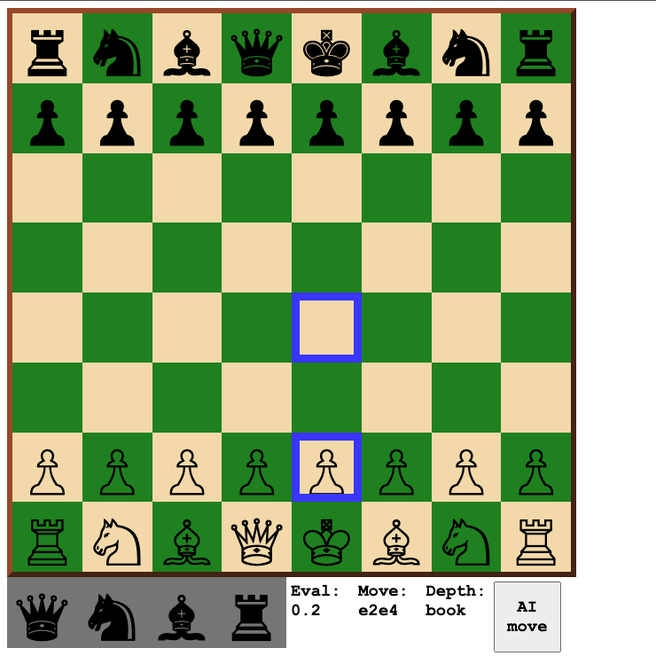
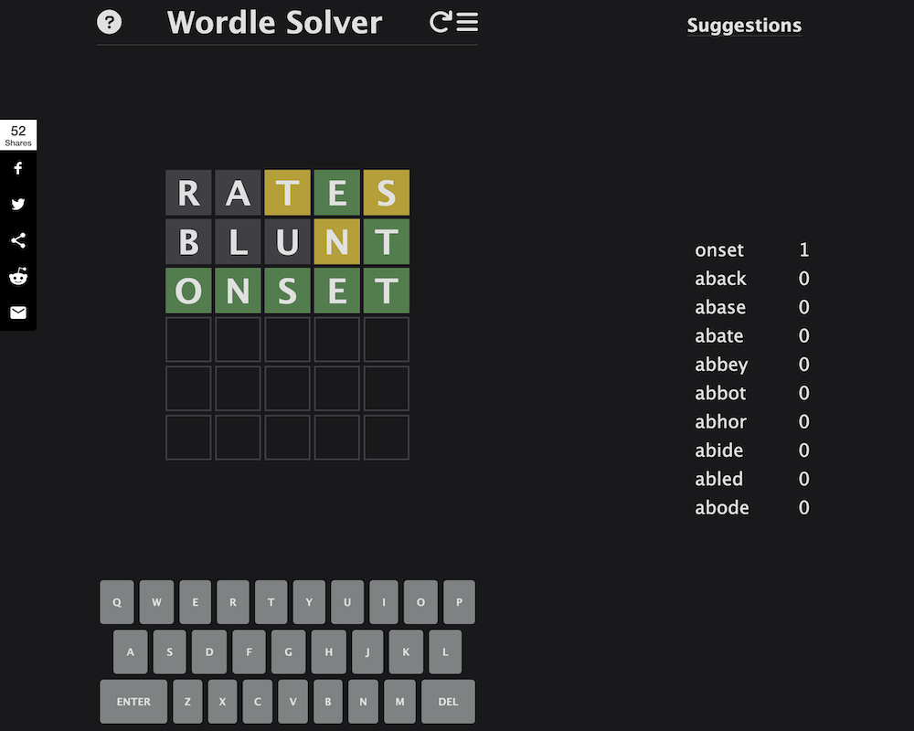

Computer Science @ UNSW · WAM 91
Lachlan Dauth
Upcoming trading intern at Jane Street & IMC Trading, and SWE intern at Hudson River Trading. AIO Gold medalist & AMO Bronze medalist.
Projects
Selected technical work
Ramsey Numbers Research
COMP3821 (Extended Algorithm Design and Analysis) research project. Investigated computational bounds on Ramsey numbers and properties of extremal Ramsey graphs. My contributions: computationally disproving the Extension Conjecture and Degree Difference Conjecture via counterexample search on McKay's graph database, and implementing a 3-colour Ramsey graph generator to find lower bounds.

JS Chess Engine
A fully playable chess engine with an AI opponent built from scratch in JavaScript, including move generation, board evaluation, and minimax with alpha-beta pruning.
Play it
Wordle Solver
An optimal Wordle solver using information theory — each guess is chosen to maximise expected information gain, consistently solving the puzzle in under 4 guesses.
Try itAI Learns to Play Snake
A neural network trained with a genetic algorithm to play Snake. Agents evolve across generations, with natural selection favouring higher-scoring individuals.
AI Learns to Drive
Cars guided by neural networks learn to navigate a race track through evolutionary training. Raycasting sensors feed into the network; fitter agents reproduce each generation.
8-bit Minecraft Computer
A fully functional 8-bit computer built from redstone logic gates in Minecraft, capable of running custom assembly programs — including Fibonacci and multiplication algorithms.
Resume
Sydney, NSW · lachydauth@gmail.com · LinkedIn
Experience
- Trading Intern — Jane Street Hong Kong Jun – Sep 2026
- Trading Intern — IMC Trading Sydney Nov 2026 – Jan 2027
- Software Developer Intern — Hudson River Trading Singapore May – Aug 2027
Sydney, NSW
- Received Trading Internship offer for summer 2026–27
- Achieved 1st place in the final trading competition across all participants
Associate Software Engineer · Sydney, NSW
- Designed and maintained ETL pipelines to load logistics data into the analytics team's database
- Worked on Issue Manager, a BERT-based ML model for automatic issue routing to engineering teams
Web Developer · Perth, WA
- Improved UX and automated business processes for tutors and clients
Mathematics Tutor · Perth, WA
- Tutored years 6–8 students in Mathematics and Python programming
Education
B.Sc. Computer Science · Sydney, NSW
- WAM: 91 (High Distinction, 85+)
Canberra, ACT
- Selected among Australia's top high school mathematicians for a 2-week residential program in proof-based mathematics
High School · Perth, WA
- ATAR: 99.10
- Cross Country Co-Captain (2024), AMC Prize (2022), Olympiad mentorship, Da Vinci Decathlon
Rising Scholars Program · Perth, WA
- Dual enrolment (Years 10–11) · WAM: 95
Awards
Skills
Outside Work
Running